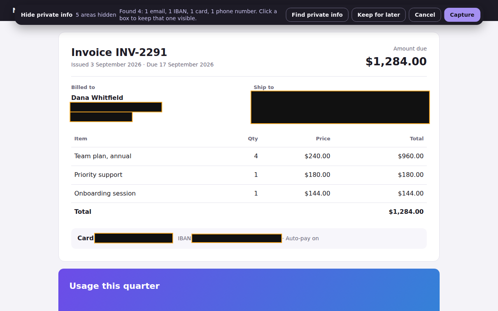

Redact a screenshot: black out private info before it exists
Bug reports, invoices, dashboards and support tickets are full of names, emails and account numbers. The usual way is to take the screenshot, then paint over it in an editor. That leaves an uncensored copy on your disk first, and it's easy to miss a spot on a long page.
Get Full Page Screenshot — free
Try it on a demo invoice
Black it out before the picture exists
Full Page Screenshot for Chrome lets you mark areas before it captures. The boxes are painted into the image while it is being made, so an unredacted version is never saved. Everything happens in your browser; nothing is uploaded.

How to do it
- Open the page and click the Full Page Screenshot icon.
- Choose Hide private info. Press Find private info to mark emails, phone numbers, card numbers, IBANs and common API keys automatically, or drag over anything else you want hidden.
- Check the boxes, remove any you don't need, and press Capture. You get one PNG, JPEG or PDF of the whole page, already redacted.
Automatic finding looks for patterns in the page text, so always look over the result: it can't know that a plain word is someone's name. Card numbers are only marked when their check digit is valid, to avoid covering order numbers.
What's free
- Full-page, part-of-page and scrolling-panel captures as PNG, JPEG or PDF, without limits.
- 3 redacted captures a month, including automatic finding. Redacting on the demo invoice is always free.
- Pro removes the limit and adds capturing a list of pages in one run. See pricing.
Redacting an image you already have
Blacking out an existing image is a different job, and it has a trap in it: many photo editors
draw the box as a layer, and "flattening" or exporting sometimes keeps the original pixels
underneath, or leaves them in the file's metadata. Blurring is worse — a blur is reversible
often enough that courts and newsrooms have been embarrassed by it, and pixelation of text can
be undone by brute force because there are only so many words that pixelate the same way.
- Safest: cover the area with a solid black rectangle, export to a new PNG or
JPEG, then open that file and check the covered area is genuinely gone.
- Strip the metadata as well: an exported photo can still carry the location, the
device and sometimes a thumbnail of the original frame.
- Never blur a password, a card number or a face you actually need hidden. Cover it.
- Best of all, don't create the exposure: if the image is a screenshot you are about to
take, black the values out before the picture exists, which is what the extension below does.
There is then no original underneath to recover.
Tips for safer screenshots
- Check links too. In PDFs, Full Page Screenshot drops clickable links that sit under a black box, so the address can't give anything away.
- Watch the address bar and tab titles if you capture your whole screen with another tool; a page capture doesn't include them.
- Prefer PNG for text-heavy pages; JPEG can blur small print.